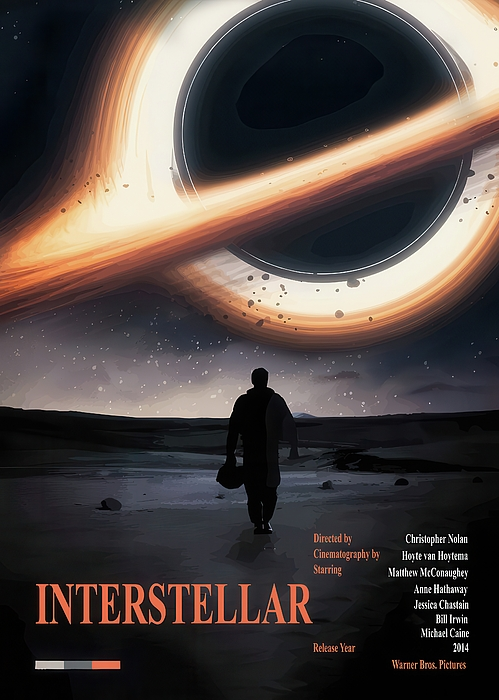
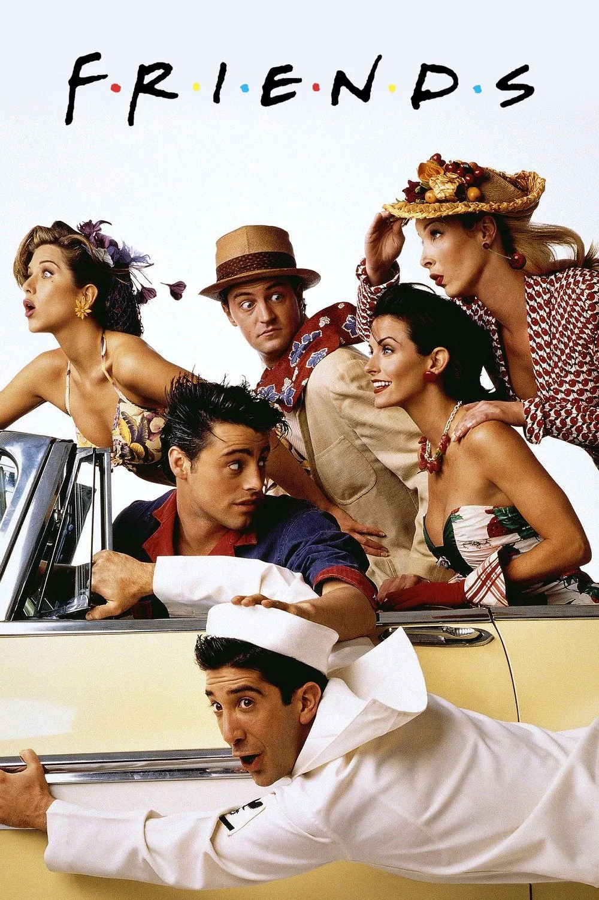

La La Land
Romantik • Müzikal
Sevdiğin film ve dizileri seç, yorumunu yaz ve sana uygun yeni yapımları keşfet.
Romantik • Müzikal

Bilim Kurgu • Dram

Komedi • Dram

Komedi • Dizi

Bilim Kurgu • Dizi

Komedi • Dizi
Haftanın karakteri: Zerrin — renkli tarzı ve unutulmaz çıkışlarıyla.
Yorumunu yaz